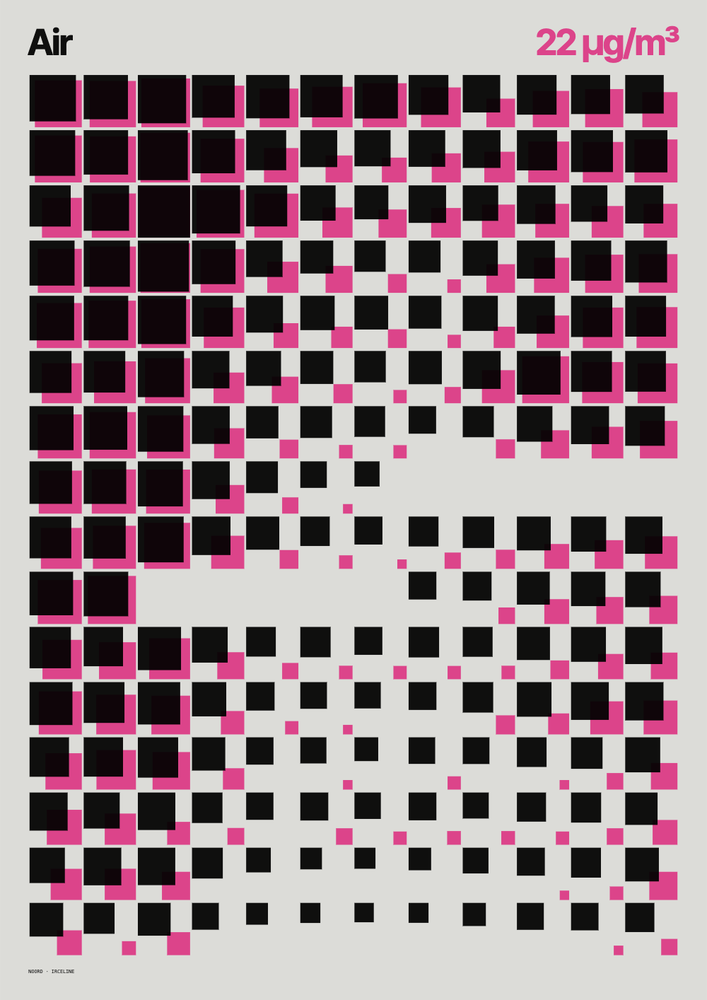
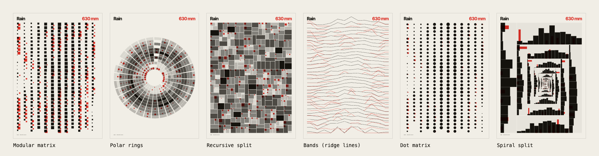

NOORD turns the city's open data — rain, sunshine, bike counters, air quality, trees, transit stops — into A3 posters. Each poster sits on a 6 × 8 grid, uses two inks on a paper tone, and is ready to print or to frame. You choose the data and the grid; the seed decides the rest.

Modular matrix · Field (hour × day) · Polar rings · Recursive split · Isometric · Bands (ridge lines) · Dot matrix · Spiral split · Broken grid.
The maps redraw the city as a field of dots: where things are dense, the ink is too.
| Colors | Fifteen paper-and-two-ink palettes, or Custom: pick paper, ink 1 and ink 2 yourself. On light papers the two inks overprint, as on a real press. |
| Type | Ten display + mono font pairs, embedded in the export. |
| Tints | Smooth for continuous shades, or 5 / 3 screens for flat steps, like a screen print. |
| Text | Minimal (title and key figure), None (art only) or Full (axes and legend). |
| Contrast | Stretches or flattens the values, from 40 to 260 %. |
| Seed | A number from 1 to 99 999. Same seed, same poster. |
| Rotate axes | Swaps rows and columns of the data. |
| Fuse cells | Closes the gaps: the cells touch. |
| Type as data | Row labels grow with their values. |
| Page grid | Shows the 6 × 8 grid the poster is built on. |
| SVG | A3 at true size, 297 × 420 mm, fully vector. Open it in Illustrator, InDesign or Figma and keep editing. |
| PNG | 300 dpi for print (3508 × 4961 px) or 150 dpi for screens and sharing. On a phone, 150 dpi is chosen for you. |
| Bleed | Tick Bleed 3 mm + crop marks before exporting a file for a printer. |
| File name | Each file is named after its data, grid and seed — noord-weather-rings-7 — so you always know how to remake it. |
| Zoom | Trackpad or wheel, pinch, double-click, or the + − 0 keys. Fit brings the whole poster back. |
| Pan | Drag the poster. |
| Reroll | R, the Reroll button, or the round ↻ button on a phone. |
| Interface | Eight themes for the app itself — Paper, Night, Klein blue, Acid, Blush, Terminal, Concrete, Tomato — or Auto, which follows your system. |
| Logo | Click the NOORD logo to cycle through its typefaces. Both choices stay in this browser. |